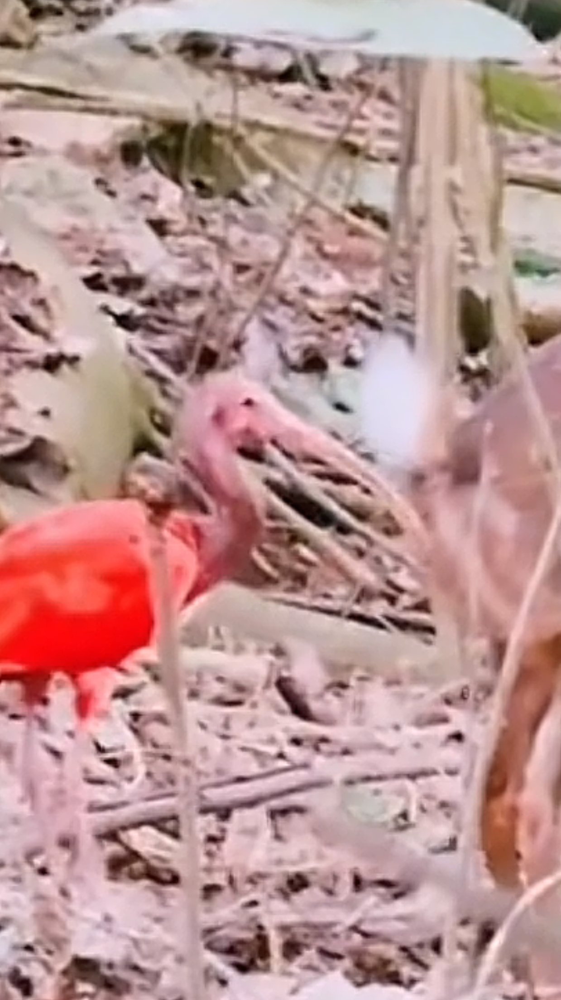
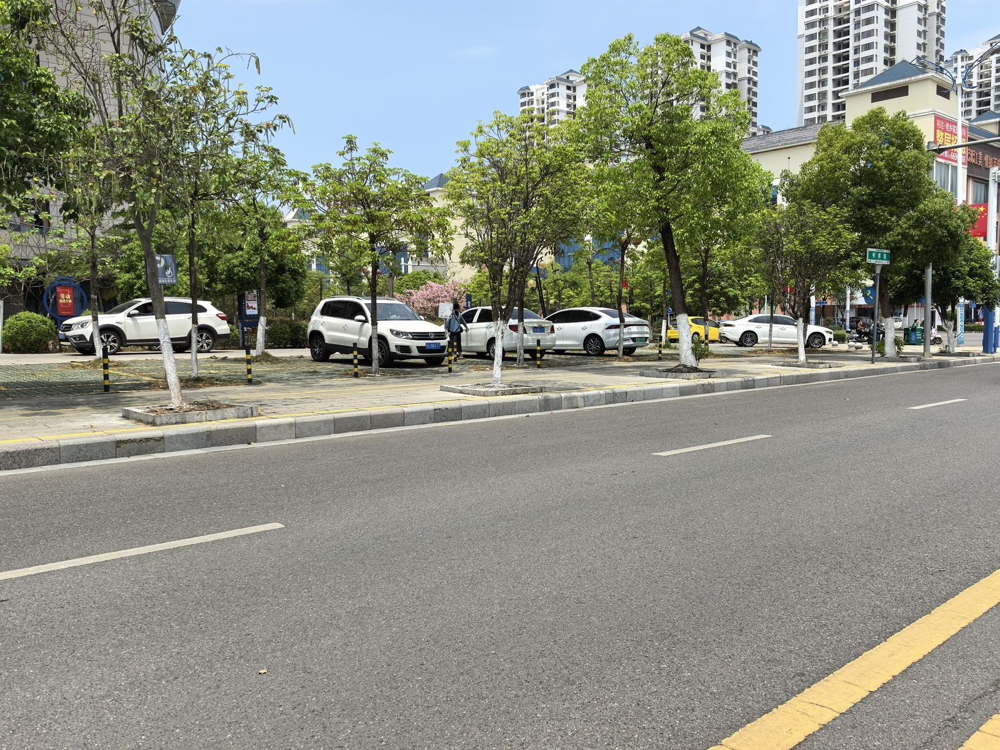

车开那么慢[微笑]都没追上人[微笑]不爽
你们的脸小心点，都把我们夏暖的手打疼了
🦩：嗯？凑凑的[闭嘴] 
完全可以，我支持5块
这个建议我认为可行[捂脸]
给台湾同胞点个赞[赞]，大陆又多了一个省
如果高考共用一张卷，满朝文武皆河南
我有个问题，史密斯推肩和推胸的区别在啥呀[送心][送心]
表啊，射偏了，全打广州来了
打哪去了真打广东去了[宕机]?
广西气象局几次人工降雨应该并不是因为打偏，而是广西连续高温没有云层达不到降雨条件，但各个区县旱灾严重很多庄稼都死了地都裂开了所以旱灾的影响同样不可小觑，广西也有连续人工降雨经验，而且现在科技发达很多能定位到厘米怎么会打那么偏，正是多次尝试还不降雨才能反应广西的情况到底有多恶劣[流泪][流泪][流泪]阿东的人民感谢你们下班当河马了
据传:云是从广西往广东飘的，老表想拦截打了几炮，没拦截下来，云飘到湛江，湛江也想拦截点雨，又打了几炮，没拦截下来，云飘到广东，江门又打了几炮，这下知道为什么暴雨在广东下了一天一夜了吧[捂脸]
此时的广西 
能对怀孕母猫做这么残忍的事，不敢想当时那人脑子里是不是对孕妇有更残忍的念想[困]下一个受害的又会是谁
我家猫钻完灶台后被我自己剪的[灵机一动]
怎么了！这只是不养了吗？
一个斗鸡眼一个近视，吃饭都找不到碗
🐱 你打我撒，你打我撒
看到主人那黢黑的手和衣服 就知道它这两巴掌挨得不冤
猫一但钻过一次火塘，后面就像狗吃过屎一样改不了了
小东西，还挺注重个人隐私的[看]
爸爸心想我也很累呀 我要挣钱 我要拉粑粑 我要抽烟 还要看手机 没有时间呀
大数据完全可以筛出男性，推给所有爸爸的，请不要再增加妈妈的焦虑了[微笑]
想转发给老公，想想还是算了！野猪品不了细糠
《我们都在用力地活着》《我都这么用力了你们怎么还活着》[黑脸]
隔壁的植物:
范老师这送葬者的发型，真有气质。
看了这么多期我算是明白了，东西和人总得有一个是老的，老东西拿新东西，年轻人拿老东西[看][看]
那时候感觉是烂片，现在一看能打高分
Eason：我唱歌好难听的[呲牙]
小时候看了这电影，给小小的老子大大的震撼
Read more: